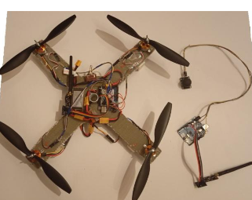
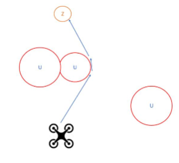
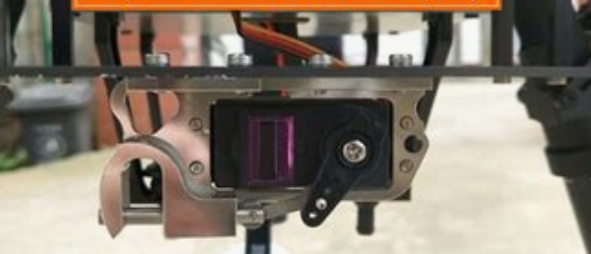
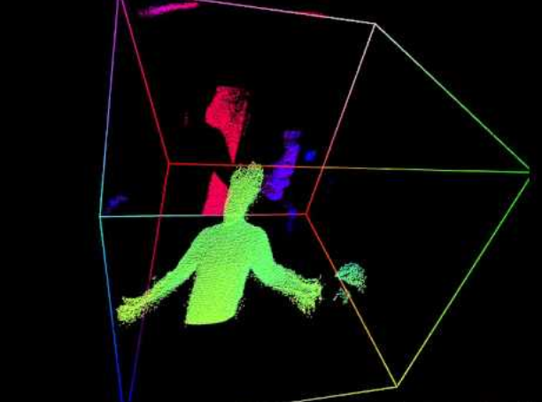
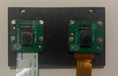
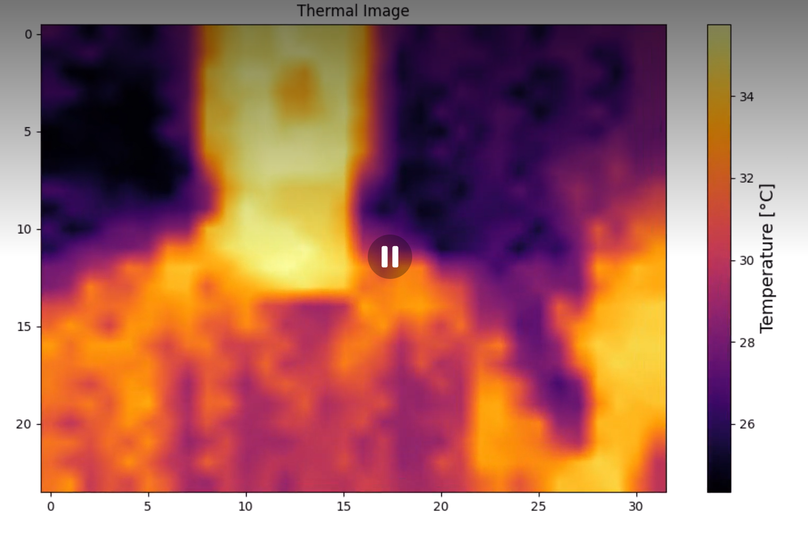

MultiDrone
Eine autonome Multifunktionsdrohne zur Erstellung von 3D-Karten, Hinderniserkennung und weiteren Anwendungen wie Paketlieferung und Waldbranderkennung.
Projektübersicht
Das Ziel von MultiDrone ist die Entwicklung einer autonomen Drohne, die verschiedene Aufgaben selbstständig ausführen kann. Die Hauptmission ist das Erstellen einer 3D-Karte einer Umgebung durch Sensorik und Kamerasysteme.

Die autonome Drohne
Bei dem ersten Projekt „Die autonome Drohne“ wurde eine Drohne mit einem Arduino System entwickelt, die selbstständig von einem Startpunkt zu einem Zielort fliegen konnte. Die Stabilisierung, Höhe und Neigung werden durch eigenen Code kontrolliert.

Hindernisserkennung
Mit einer ToF-Kamera kann die Drohne 3D-Bilder erstellen. Dadurch nimmt sie ihre Umgebung wahr und kann Hindernisse erkennen und umfliegen.

Paketlieferung
Die Drohne kann kleine Pakete über einen Abwurfmechanismus transportieren und ausliefern. Mit einer Kamera erkennt sie außerdem die Landeplattform und verbessert dadurch ihre Position und Ausrichtung.

3D-Mapping
Eine weitere Aufgabe der Drohne ist das Erstellen von 3D-Modellen. Mit der ToF-Kamera werden einzelne 3D-Aufnahmen erstellt und mit GPS-Daten, Höhe und Neigung gespeichert.
Zusätzlich wird eine Farbkamera verwendet, damit farbige 3D-Scans erzeugt werden können. Dadurch lassen sich Infrastrukturen analysieren und Schäden erkennen.

Stereo-Kameras
Zwei Kameras ermöglichen die Berechnung von Entfernungen über Bildverschiebungen und erweitern die Reichweite des 3D-Scans.

Waldbranderkennung
Mit einer Wärmebildkamera können Temperaturunterschiede erkannt werden. Dadurch lassen sich Waldbrände frühzeitig entdecken oder Überhitzungen an Solaranlagen feststellen.
Ergebnis
MultiDrone zeigt, wie eine autonome Drohne flexibel für unterschiedliche Aufgaben eingesetzt werden kann. Besonders das 3D-Mapping und die autonome Navigation bilden die Grundlage für zukünftige Anwendungen.